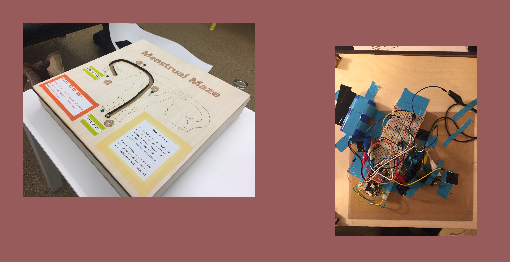
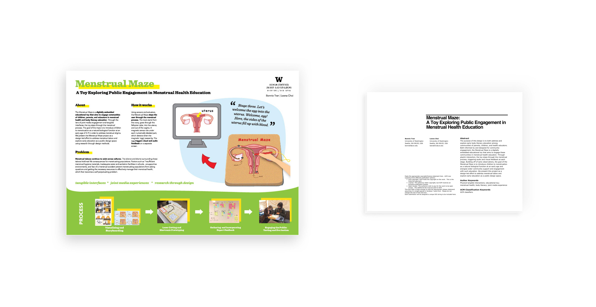

An educational toy to address menstrual taboo.
Menstrual Maze is a digitally embedded educational toy that steps through the menstrual process.
About
Both informed by and designed for community engagement, the Menstrual Maze is a digitally embedded educational toy that engages parents, children, and educators in menstrual health and body literacy education. Through the lens of joint media experiences and tangible interfaces, the toy steps through the menstrual process, triggering audio and visual feedback along the way. The goals of the maze are to 1) introduce children to concepts of menstruation and 2) energize wider community support with such education in efforts to address menstrual stigma.
Process
The original idea stems from a design workshop in which menstrual health activists, educators, and community members attended. Participants imagined a uterus toy that could facilitate healthy conversations between parents and young children in spaces such as a pediatrician’s waiting room and classrooms. To build upon the idea, our team of two visualized, designed, and built a working prototype using a combination of laser cutting and electronics. We employed research through design methods, in which the design artefact was used as a means to explore, discover, and iterate. Our objectives were to explore 1) what introducing children ages 4– 9 to reproductive organs looks like and 2) the types of interactions that emerge from joint media experiences between parents and kids over menstrual health.
Results
We observed 7 children and 6 parents interacting with the toy and interviewed them post-play. After qualitatively coding our observations, we noticed the following themes emerge. We learned that 1) parents and children were engaged with the physical form, 2) the educational content may be too abstract or complex, 3) adult prompting may lead to more engagement with the content and 4) parents varied in levels of comfort and engagement. Future work still needs to be done to address these findings.

This project was accepted into the CHI Student Design Competition for 2018 @ Montreal.

Click here for the research paper.